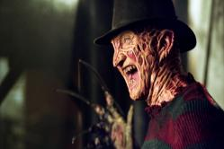
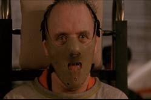
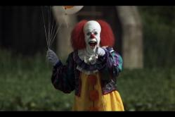

PELICULAS DE TERROR
El cine de terror es un género cinematográfico que se caracteriza por su voluntad de provocar en el espectador sensaciones de pavor, terror, miedo, disgusto, repugnancia, horror, incomodidad o preocupación.
Las 10 mejores peliculas de terror de la decada (2010-2019)
- The Crazies(2010)
- Cisne negro (Black Swan, 2010)
- Stake land (2010)
- Kill List (2011)
- La cabaña en el bosque (Cabin in the Woods, 2011)
- Sinister (2012)
- Lords of Salem (2012)
- Expediente Warren (The Conjuring, 2013)
- Under the Skin (2013)
- Babadook (The Babadook, 2014)
Mejores actores de peliculas de terror
| PERSONAJE |
FOTO |
NOMBRE DEL ACTOR |
| FREDDY KRUEGER |

| ROBERT ENGLUND |
| HANNIBAL LECTER |

| ANTHONY HOPKINS |
| PAYASO ESO |

| TIM CURRY |
| ARTHUR KIPPS |
| DANIEL RADCLIFFE |
| ICHABOD CRANE |
| JOHNNY DEPP |
películas de terror